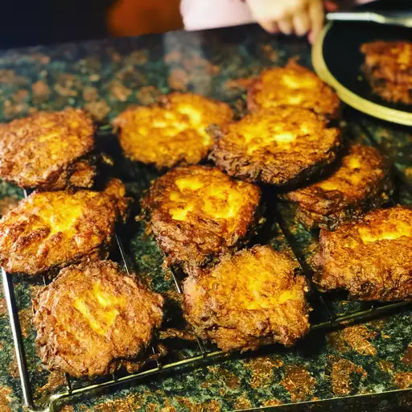

Latkes

Description
A traditional Ashkenazi Hanukkah treat!
Superior to sufganiyot :p
Ingredients
- Potatoes
- Yellow Onion
- One egg
- Salt
- Black Pepper
- All-purpose flour
- Vegetable oil (for frying)
Steps
- Grate potatoes and onion into a large bowl
- Mix in egg, salt, and pepper. Add enough flour to make the mixture thick
- Preheat the oven to low, about 200 degrees F
- Heat 1/4 inch oil in the bottom of a heavy skillet over medium-high heat
- Drop in 2-3 lumps of batter, and flatten with back of a spatula
- Fry, turning pancakes once, until golden brown
- Transfer pancakes to a plate lined with a paper towel to drain. Keep warm in the oven until serving. Repeat until all potato mixture is used.